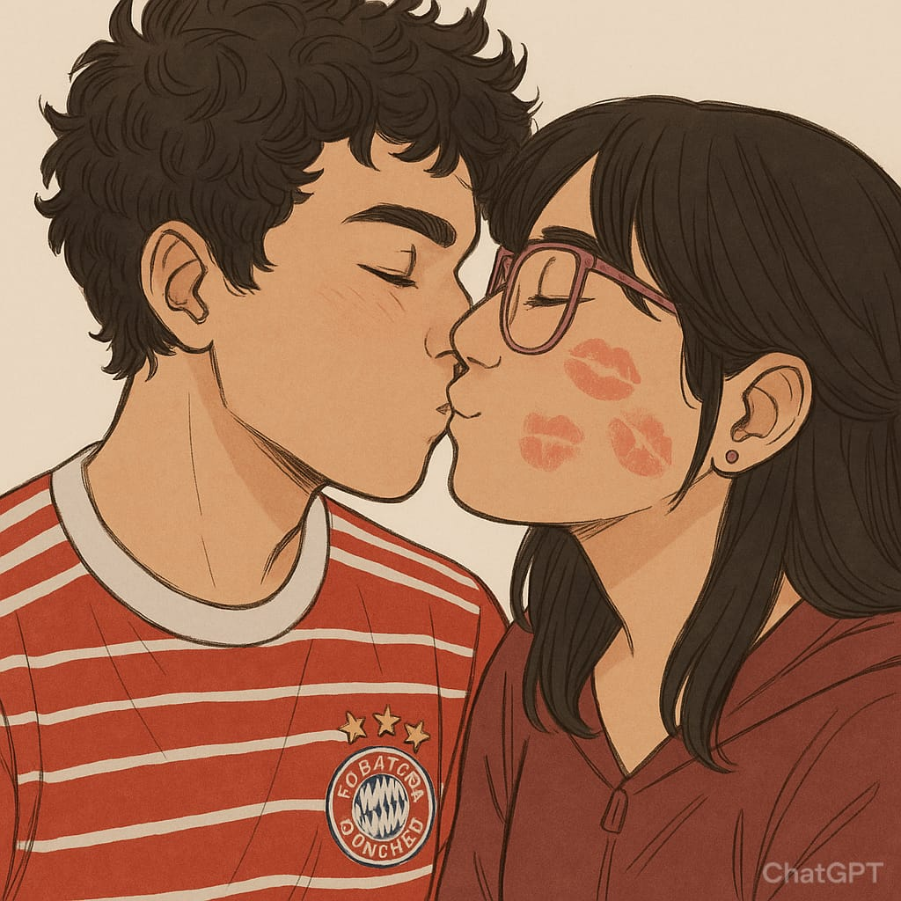
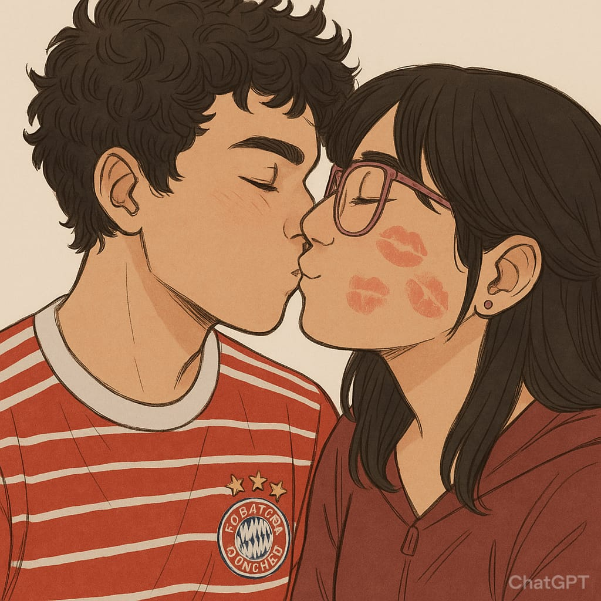

Holaaaa, Danyyy, feliz aniversario.
Te amo, te amo con todo mi corazón, Dany. En todos estos años, en este año de novios es donde he sido más feliz.eres la mejor novia de todas las que han existido, mi amor por ti es tan sincero y grande, eres perfecta Dany, gracias de verdad por todo la felicidad que me haz dado estoy muy comodo contigo y deseo con todo mi ser, seguir esta relacion, por muchisisisisimos, años mas hasta que seamos viejos, y tengamos hijos y si se puede nietos. mis sentimientos son sinceros y bonitos hcia a ti, y te lo estoy demostrando con esta pagina, aun que no sea tan grande o algo con tantos detalles, estuve aprendiendo a hacerlas, por que lo hice? por que queria darte algo bonito y especial para ti, por que asi como tu eres especial para mi, queria darte asi de especial, de verdad te amo y feliz aniversario. te amo, Dany💜💙
 
